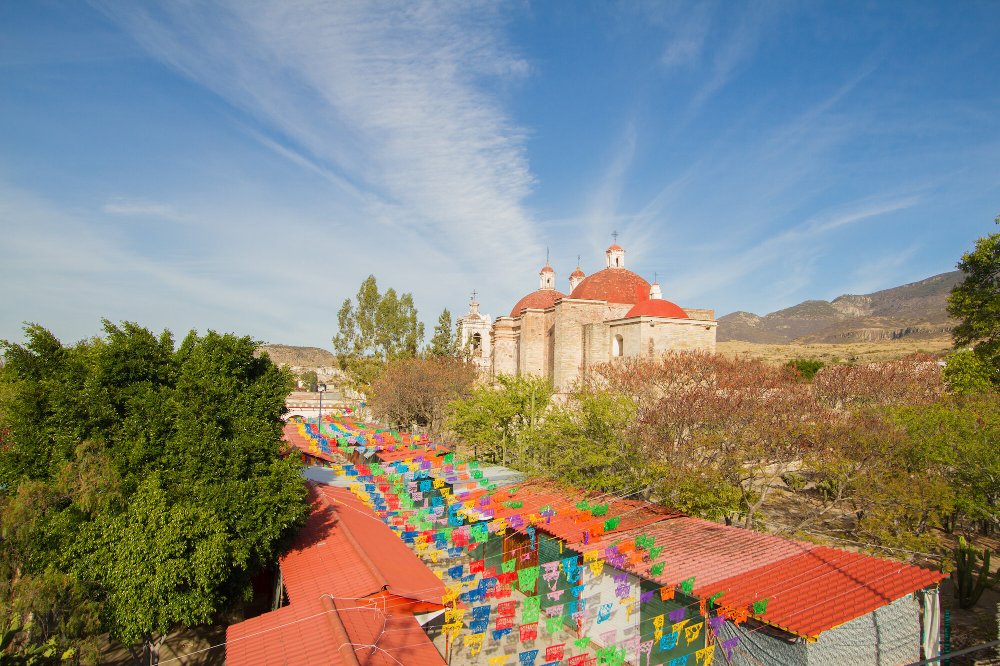
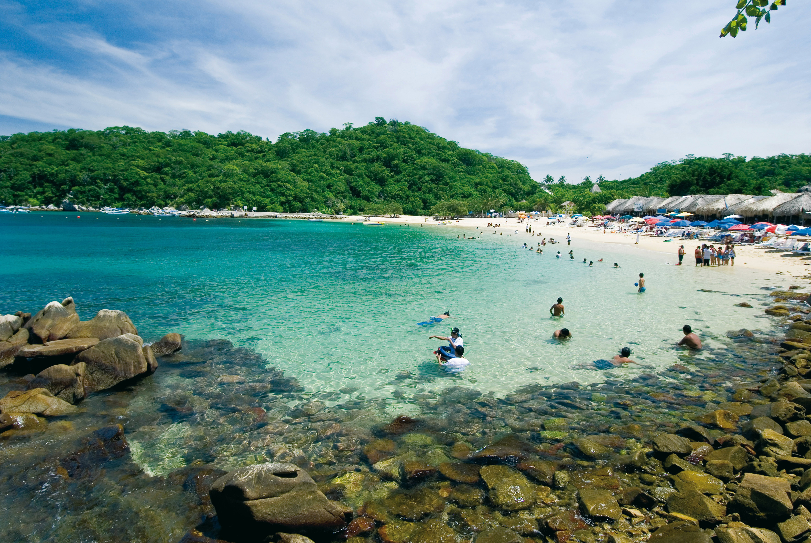
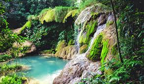
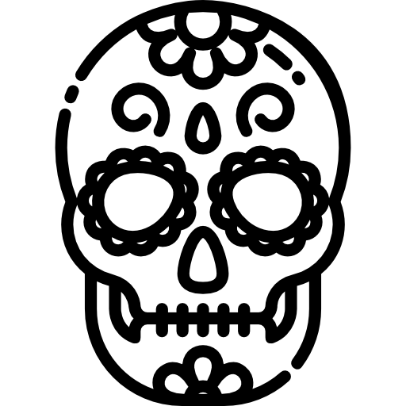

Oaxaca destaca como destino turístico por su rico patrimonio cultural, su gastronomía única, sus tradiciones ancestrales y su belleza natural. La ciudad de Oaxaca, declarada Patrimonio de la Humanidad por la UNESCO, es un escaparate de monumentos históricos, templos y jardines. Además, el estado cuenta con pueblos mágicos, playas hermosas y diversas actividades al aire libre.

El lugar de los muertos, Mitla
Cuenta con una Zona Arqueológica que fue la Ciudad Sagrada de los zapotecos durante el periodo Posclásico. Es el lugar ideal para comprar todo tipo de textiles en donde se ven reflejados los diseños prehispánicos, resaltando las famosas grecas de Mitla. También puedes encontrar una gran variedad de mezcales artesanales de la región.
Huatulco, y su biodiversidad marina
Destaca por sus nueve bahías y 36 playas de aguas cristalinas y arena dorada. Además de la belleza natural, Huatulco ofrece una gran variedad de actividades, desde deportes acuáticos hasta la exploración de la rica cultura oaxaqueña.


Tuxtepec, y su conexión con la naturaleza
Destaca por su actividad económica diversificada (agrícola, ganadera, industrial y comercial) y su ubicación estratégica como punto de convergencia entre los estados de Oaxaca, Veracruz y Puebla
México: donde cada día es una celebración y cada lugar es un tesoro por descubrir

Aquí te dejamos más opciones que puedes visitar en Oaxaca